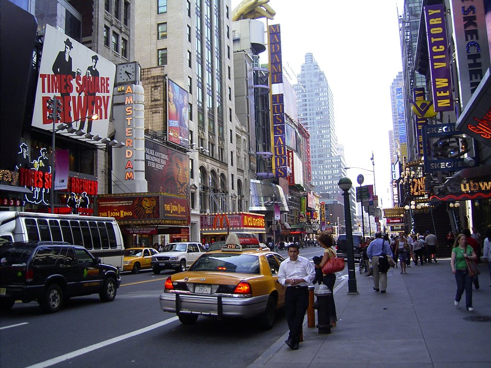

Axel, an amatuer video game tournament attender, lives closeby to the city known as MetroTroplis. MetroTroplis wasn't exactly known as the one place for video game tournaments originally, having been like every other city in the east coast.
In 2004, however, one local tournament quickly changed all of that when a clip from one of the matches went viral online. Whether that's for better or worse really depends on who you ask.
